Pôle Compétences
Formation et accompagnement des acteurs éducatifs aux enjeux du monde numérique.
Pôle Sensibilisation
Ateliers d'Éducation aux Médias et à l'Information (EMI) pour les jeunes et leurs familles.
Pôle R&D Pratique
Accueil de Loisir Numérique en ligne : WebTV, compétitions esport et projets vidéoludiques.
Bénéficiaires
Ateliers de Sensibilisation
Sète : L'innovation pédagogique avec notre partenaire historique
Sète est notre partenaire historique, le socle avec lequel nous avons construit les bases de l'association. Avec la ville et le CCAS, nous continuons d'innover en développant de nouvelles approches pédagogiques et de nouveaux contenus de sensibilisation. Cette année encore, nous avons déployé des projets de sensibilisation en famille, affirmant notre engagement continu, et organisé avec succès la troisième édition de la Fête Mondiale du Jeu.
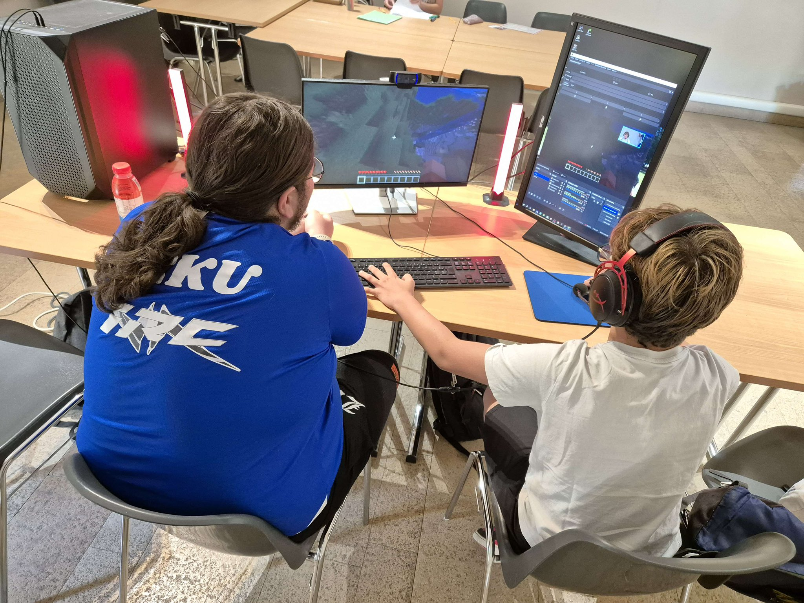
Collège Gérard Philipe : Une innovation sociale en zone QPV
Face à diverses problématiques, le collège Gérard Philipe a orchestré un événement de sensibilisation inédit en collaboration avec le service politique de la ville de Montpellier, le rectorat, la TAM et d'autres acteurs associatifs. Cet événement marque une étape d'innovation majeure pour LPDN : nous avons répondu présent pour cet établissement situé en zone QPV, en adaptant spécifiquement nos contenus aux réalités et défis rencontrés sur le terrain.

UNAPEI 34 : Numérique & Inclusion
Le SESSAD La Domitienne nous a sollicités pour intervenir auprès d'un public inédit pour l'association : les jeunes porteurs de handicap. En nous adaptant à leurs spécificités, nous avons entièrement conçu et animé de nouveaux modules pour les sensibiliser aux influences — positives comme négatives — des réseaux sociaux et de l'intelligence artificielle.
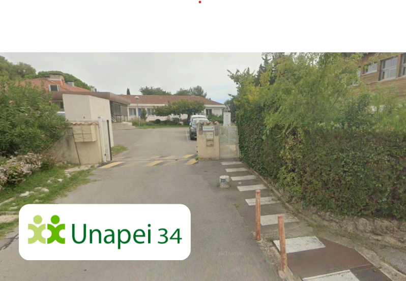
| Action | Commanditaire | Lieu | Volume | Public touché |
|---|---|---|---|---|
| Ateliers pour jeunes porteurs de handicap | UNAPEI 34 | Sessad La Domitienne | 2 demi-journées | 4 jeunes, 3 Professionnels |
| Événement de Sensibilisation | Service Politique de la Ville (Montpellier) | Collège Gérard PHILIPE | 6 demi-journées | 283 jeunes, 14 Professionnels |
| IA à Portée de Main | Ville de Sète | Médiathèque F. Mitterrand | 5 demi-journées | 12 jeunes, 5 Professionnels |
| Écrans en Famille | Ville de Sète | Médiathèque F. Mitterrand | 6 demi-journées | 25 enfants & jeunes, 14 Parents, 11 Pro. |
| Codage & Robotique | Ville de Montpellier | Écoles de Montpellier | 27 cycles de 6h | 324 enfants |
| Ateliers Parents-Enfants | CRIJ (Dispositif TNE) | Écoles de Lunel, Montpellier et Sète | 10 séances de 2h | 110 enfants, 70 Parents, 16 Pro. |
Ateliers Robotique
Notre positionnement sur un appel à projet de la Ville de Montpellier axé sur la robotique s'est avéré déterminant. Ce succès a considérablement renforcé la pérennité et la viabilité du modèle économique de l'association pour les années à venir.
Événements
Pézenas : Un événement XXL et citoyen
Pour la deuxième année consécutive, la ville de Pézenas a fait confiance à notre association pour concevoir un événement de sensibilisation d'envergure. Au programme : une soirée débat sur l'IA animée par des universitaires (accompagnée de nos stands), suivie d'une journée dédiée aux collégiens et lycéens proposant notre plus large éventail d'ateliers, et enfin une journée grand public. Cet événement nous a également permis de redéployer un atelier phare favorisant le développement de la citoyenneté via un mod Minecraft conçu par notre équipe.

Territoire Numérique Éducatif (TNE) : Un impact territorial massif
Cette année, notre implication dans le dispositif TNE s'est traduite par 5 événements majeurs, touchant plus de 1 700 jeunes, 80 parents et 200 professionnels. Depuis le lancement du dispositif, notre équipe de bénévoles s'est mobilisée sur pas moins de 10 événements, confirmant notre rôle d'acteur de premier plan sur le territoire.
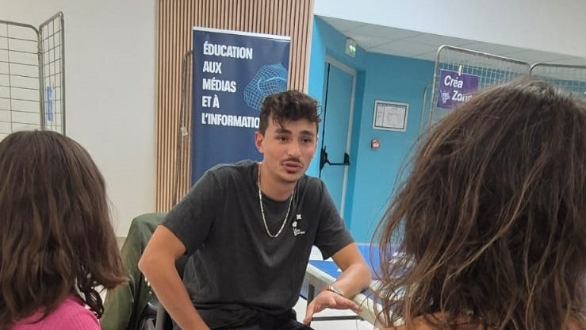
| Événement | Commanditaire | Lieu | Volume | Public touché |
|---|---|---|---|---|
| Super Hérault 3 | CRIJ (Dispositif TNE) | Domaine de Bessan à Béziers | 12 demi-journées | 1 008 enfants & jeunes, 98 Parents, 85 Pro. |
| Fête Mondiale du Jeu | Ville de Sète (Dispositif TNE) | Jardin de la Pierrerie à Sète | 8 demi-journées | 147 jeunes, 51 Parents |
| Festival du Jeu Vidéo et du Numérique | Ville de Pézenas | Maison du Peuple à Pézenas | 13 demi-journées | 289 jeunes, 50 Professionnels |
| Cévennes Connectées | Ville de Ganges (Dispositif TNE) | Salle des Fêtes de Ganges | 12 demi-journées | 252 jeunes, 67 Professionnels |
| Numérique - Grandir en Famille | Ville de Montpellier (Dispositif TNE) | Grp. scolaire André Boulloche (Montpellier) | 8 demi-journées | 72 enfants, 33 Parents |
Formation
Formation Professionnelle : Au-delà de l'animation
Forte de son expérience avec l'UFCV sur l'accompagnement numérique des accueils de mineurs, l'association accélère sur la formation continue. Le CCAS de Sète nous a commandé un module axé sur les risques et opportunités de l'IA. L'objectif : outiller les professionnels pour prévenir les familles, tout en les assistant dans leurs tâches quotidiennes. Avec un catalogue de 30 modules adaptables, nous ambitionnons de toucher un public grandissant d'acteurs de la pédagogie, de l'ESS et de professionnels en reconversion.
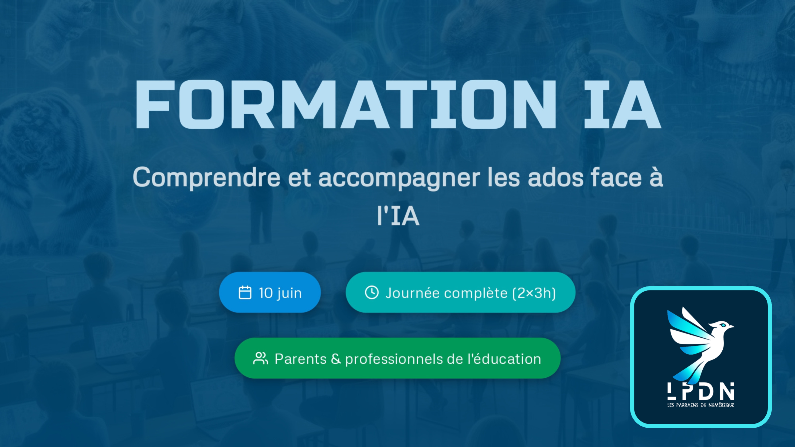
| Action | Commanditaire | Lieu | Volume | Public touché |
|---|---|---|---|---|
| Intelligence Artificielle : Risques & opportunités | Ville de Sète | Sète | 2 demi-journées | 9 Professionnels |
Action de réseau
Table ronde : Cybervigilance
Lors des Rencontres de la Cybersécurité de la Ville de Montpellier, nous avons partagé nos constats au sein de la table ronde "Génération Alpha : de nouveaux réflexes pour protéger nos enfants", aux côtés de l'Atelier Canopé 34 et de la DRANE. Ce fut l'occasion de marteler nos priorités : la nécessité d'institutions garantissant une présence adulte en ligne, la création d'espaces de rencontre avec les familles, et la promotion active de contenus de vulgarisation de qualité.

Commanditaire : Métropole Montpellier 3M
Lieu : Business Innovation Center (BIC) à Montpellier
Volume : 1 demi-journée
Public touché : 67 Professionnels
Formation : Réseaux Sociaux & IA
Dans la continuité de nos ateliers de robotique, nous sommes intervenus auprès des agents organisant les temps périscolaires et extrascolaires de la ville. Ce temps fort a permis de les sensibiliser à l'environnement médiatique des jeunes (réseaux sociaux, IA) et de les équiper face aux problématiques concrètes de l'animation d'aujourd'hui.
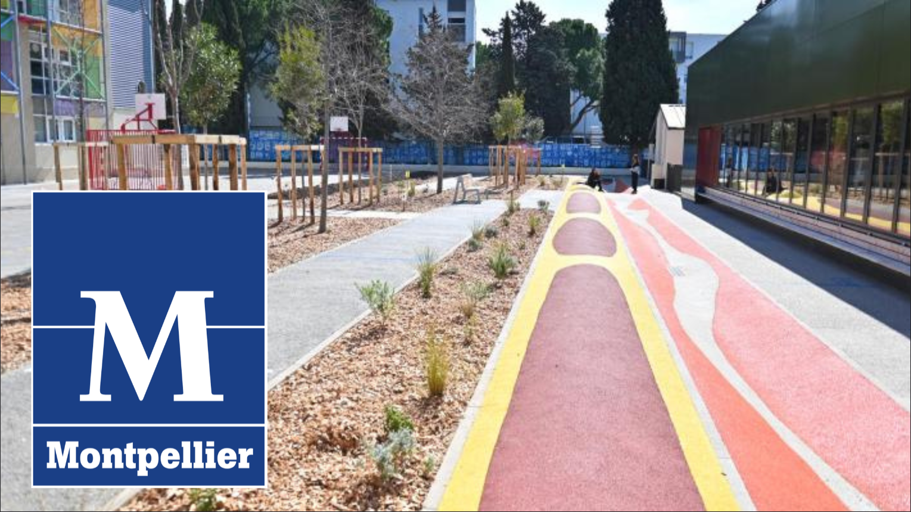
Commanditaire : Ville de Montpellier
Lieu : Grp. scolaire Louis Armstrong à Montpellier
Volume : 1 demi-journée
Public touché : 14 Professionnels (Agents du Service Education)
Développement de l’association
Structuration & Gouvernance
Dans la continuité du travail de structuration initié avec le DLA (Dispositif Local d'Accompagnement), nous avons fait le choix de nous orienter de manière proactive vers un nouvel acteur stratégique : l'AIRDIE. Cette démarche a pour objectif de continuer à guider de manière optimale et pérenne le développement de l'association. Cette évolution s'est également concrétisée par la refonte de nos statuts, l'élection de notre nouveau président Théo Leperon, et l'octroi d'un prêt de 7 000 € pour soutenir notre croissance.
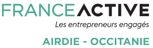
Nouveaux statuts : Nouveau président, Théo LEPERRON (actif dans le milieu de la culture : Cie Je Pars à Zart, Théâtre de La Plume).
Nouvelle gouvernance : Co-direction partagée entre 5 directrices et directeurs de pôle.
Accompagnement institutionnel : Acteur ARDIE (Dispositif France Active) matérialisé par un Prêt de 7 000 €.
Réseau (Projets de Jeunes)
L'association continue, au travers de son Accueil de Loisirs Numérique (ALN) de se mettre en réseau pour soutenir et valoriser les nouvelles initiatives directement portées par les jeunes dans les espaces numériques. Notre méthode évolue, avec la formation des équipes de jeunes à des compétences techniques clés (montage vidéo, sound design) et ma mise à disposition de nos stagiaires pour leur apporter des expertises complémentaires pointues, notamment en programmation. C'est grâce à cette synergie des compétences que ces projets innovants peuvent aujourd'hui se structurer et prendre de l'ampleur.
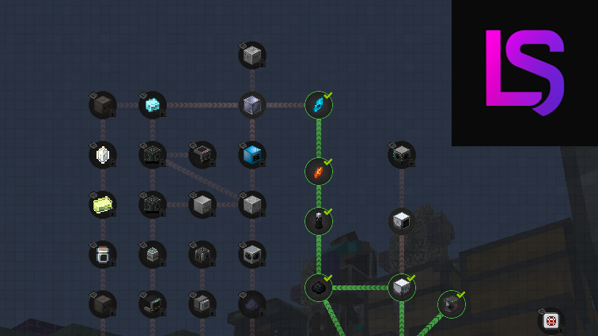
Lava Studio : Sensibilisation à la diplomatie via la création d’un mod Minecraft.
Super Games : Développement d’une IA éco responsable au service des jeux vidéo en monde ouvert.
Friendly Fire United : Lancement d’un projet communautaire sur un nouveau jeu (ReMatch).
Communication
Mise en place d’un cycle de publication régulier :
· Plateformes : X, LinkedIn & Facebook.
· Rythme : 2 publications par semaine sur X et LinkedIn, 1 publication par semaine sur Facebook.

Promeneurs du Net :
· Coordinateurs : CAF & Maison des Adolescents.
· Actions : Publication de contenus de sensibilisation sur une page Facebook dédiée, et participation à des réunions de réseau.
Création de postes
L'association repose depuis sa création sur l'engagement de ses bénévoles. Depuis Septembre 2025 nous pouvons nous reposer 8h / semaine sur le poste salarié de Jérôme PETIT.
L'année 2025 / 2026 se clôture sur un accomplissement décisif : à partir du mois de Septembre, l'équipe des bénévoles est appuyée par la mobilisation de 2 postes salarié à mi-temps. Le développement de l'association franchit un cap et passe à la vitesse supérieure.
Accueil de stagiaires
Gaming Campus & AFPA
Nos partenaires historiques continuent de nous soutenir. Cette année, la promotion AFPA a produit les montages vidéo de notre vaste campagne de recrutement pour la rentrée de septembre 2026.

EPSI
Grâce à leurs stagiaires, nous avons refondu notre plateforme web IA et créé des mini-jeux de cybervigilance.
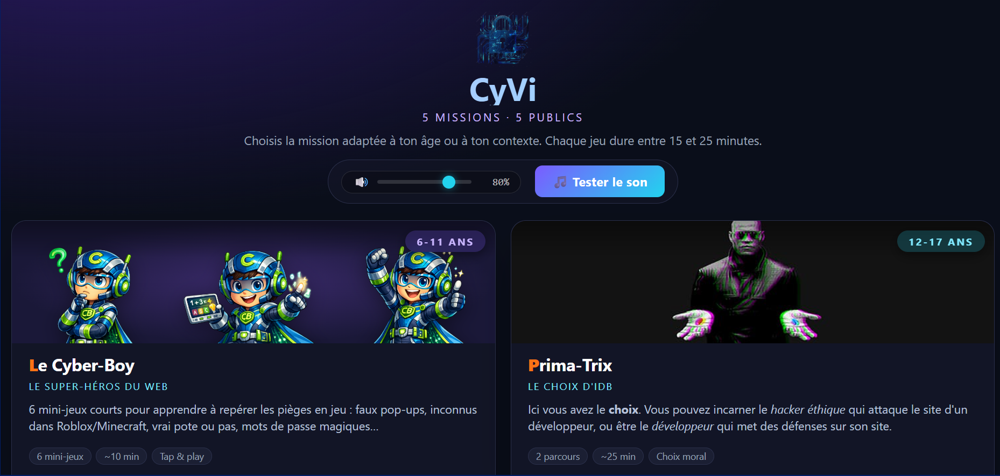
ISART
Leurs étudiants ont développé notre tout premier jeu Twitch interactif pour engager nos viewers en direct.
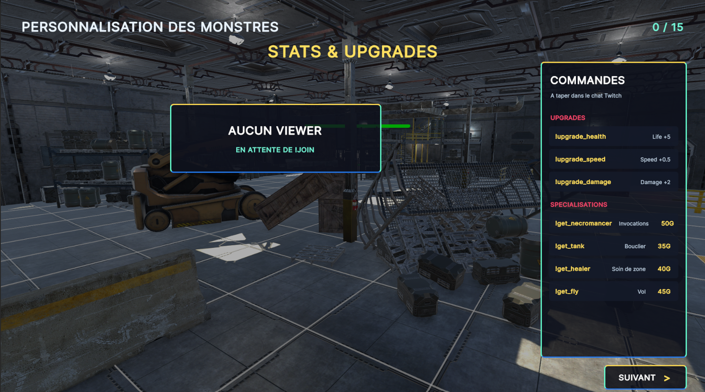
| Établissement | Effectif | Cursus / Projet | Production |
|---|---|---|---|
| AFPA | 4 | Montage vidéo Projet: Campagne d’adhésion |
1 Vidéo & 4 Shorts |
| EPSI | 4 | Cybersécurité & Développement Projet: Outils cyber vigilance & site web |
Jeu en ligne cyber vigilance et maquette du site |
| ISART | 2 | Game development Projet: Jeu interactif Twitch |
Jeu dans lequel les ennemis du streamer sont contrôlés par le chat |
Partenaires
Les Promeneurs du Net
En synergie avec la Maison des Adolescents de Montpellier et la CAF, LPDN a officiellement intégré le dispositif national "Promeneurs du Net". Cet engagement se concrétise par la publication régulière de contenus de prévention imaginés par nos créateurs de contenu. La CAF est ainsi devenue un partenaire stratégique, soutenant notre vision d'un Accueil de Loisirs Numérique ouvert à tous, y compris aux publics en difficulté.

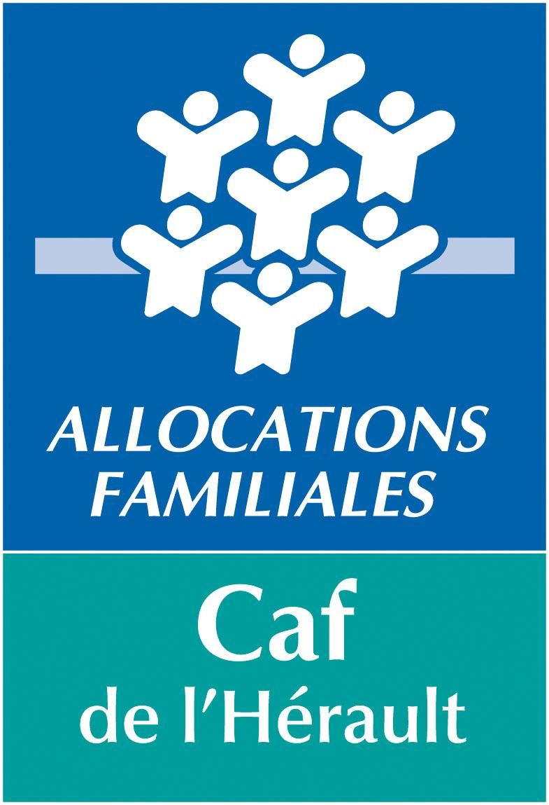
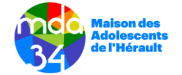
YOOZ
En 2026, l'entreprise YOOZ devient officiellement le premier sponsor de LPDN. Une étape décisive qui illustre la diversification de nos financements, nous ouvrant les portes du mécénat et de l'investissement privé, indispensables face à la réalité institutionnelle actuelle.
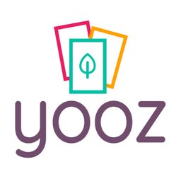
Bien Vivre Aiguelongue
L'association de quartier nous a confié le diagnostic de son parc informatique, ouvrant la voie à de futures collaborations sur des ateliers de citoyenneté sur mesure.
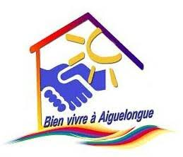